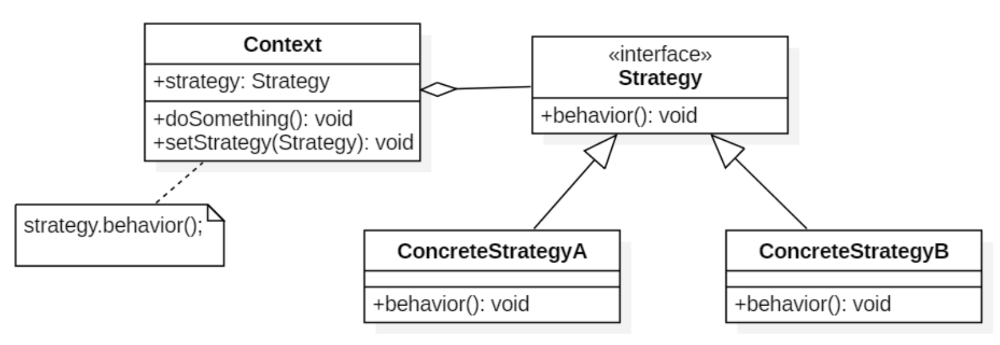

概述
在实现某一个功能有多种算法或者策略，可以根据环境或者条件的不同选择不同的算法或者策略来完成该功能。 如查找、排序等，一种常用的方法是硬编码(Hard Coding)在一个类中，如需要提供多种查找算法，可以将这些算法写到一个类中，在该类中提供多个方法，每一个方法对应一个具体的查找算法；当然也可以将这些查找算法封装在一个统一的方法中，通过 if……else…或者 case 等条件判断语句来进行选择。这两种实现方法都可以称之为硬编码，如果需要增加一种新的查找算法，需要修改封装算法类的源代码；更换查找算法，也需要修改客户端调用代码。在这个算法类中封装了大量查找算法，该类代码将较复杂，维护较为困难。如果将这些策略包含在客户端，这种做法更不可取，将导致客户端程序庞大而且难以维护，如果存在大量可供选择的算法时问题将变得更加严重。
例子：出行旅游：可以有几个策略可以考虑：可以骑自行车，汽车，坐火车，飞机。每个策略都可以得到相同的结果，但是它们使用了不同的资源。选择策略的依据是费用，时间，使用工具还有每种方式的方便程度 。
定义
策略模式：定义一系列的算法，把每一个算法封装起来,，并且使它们可相互替换，策略模式使得算法可独立于使用它的客户而变化。也称为政策模式。策略模式把对象本身和运算规则区分开来，其功能非常强大，因为这个设计模式本身的核心思想就是面向对象编程的多形性的思想。
适用性
- 许多相关的类仅仅是行为有异。 “策略”提供了一种用多个行为中的一个行为来配置一个类的方法。即一个系统需要动态地在几种算法中选择一种。
- 需要使用一个算法的不同变体。例如，可能会定义一些反映不同的空间 /时间权衡的算法。当这些变体实现为一个算法的类层次时 ,可以使用策略模式。
- 算法使用客户不应该知道的数据。可使用策略模式以避免暴露复杂的、与算法相关的数据结构。
- 一个类定义了多种行为 , 并且这些行为在这个类的操作中以多个条件语句的形式出现。将相关的条件分支移入它们各自的 Strategy 类中以代替这些条件语句。
结构

环境类(Context)
用一个 ConcreteStrategy 对象来配置，维护一个对 Strategy 对象的引用。可定义一个接口来让 Strategy 访问它的数据。
抽象策略类(Strategy)
定义所有支持的算法的公共接口， Context 使用这个接口来调用某 ConcreteStrategy 定义的算法。
具体策略类(ConcreteStrategy)
以 Strategy 接口实现某具体算法。
实现
/**
* 抽象策略
*/
public interface Strategy {
void behavior();
}
/**
* 具体策略
*/
public class ConcreteStrategyA implements Strategy {
public void behavior() {
System.out.println("ConcreteStrategyA");
}
}
/**
* 具体策略
*/
public class ConcreteStrategyB implements Strategy {
public void behavior() {
System.out.println("ConcreteStrategyB");
}
}
/**
* Context
*/
public class Context {
private Strategy strategy;
public Context(Strategy strategy){
this.strategy = strategy;
}
public void action(){
strategy.behavior();
}
}
public class StrategyTest {
@Test
public void test() {
Context context = null;
context = new Context(new ConcreteStrategyA());
context.action();
context = new Context(new ConcreteStrategyB());
context.action();
}
}
## 结果
ConcreteStrategyA
ConcreteStrategyB
总结
优点
- 相关算法系列 Strategy 类层次为 Context 定义了一系列的可供重用的算法或行为， 继承有助于析取出这些算法中的公共功能。
- 提供了可以替换继承关系的办法： 继承提供了另一种支持多种算法或行为的方法。可以直接生成一个 Context 类的子类，从而给它以不同的行为。但这会将行为硬行编制到 Context 中，而将算法的实现与 Context 的实现混合起来,从而使 Context 难以理解、难以维护和难以扩展，而且还不能动态地改变算法。最后 得到一堆相关的类 , 它们之间的唯一差别是它们所使用的算法或行为。 将算法封装在独立的 Strategy 类中使得可以独立于其 Context 改变它，使它易于切换、易于理解、易于扩展。
- 消除了一些 if else 条件语句 ：Strategy 模式提供了用条件语句选择所需的行为以外的另一种选择。当不同的行为堆砌在一个类中时 ,很难避免使用条件语句来选择合适的行为。将行为封装在一个个独立的 Strategy 类中消除了这些条件语句。含有许多条件语句的代码通常意味着需要使用 Strategy 模式。
- 实现的选择 Strategy 模式可以提供相同行为的不同实现。客户可以根据不同时间/空间权衡取舍要求从不同策略中进行选择。
缺点
- 客户端必须知道所有的策略类，并自行决定使用哪一个策略类: 本模式有一个潜在的缺点，就是一个客户要选择一个合适的 Strategy 就必须知道这些 Strategy 到底有何不同。此时可能不得不向客户暴露具体的实现问题。因此仅当这些不同行为变体与客户相关的行为时 , 才需要使用 Strategy 模式。
- Strategy 和 Context 之间的通信开销 ：无论各个 ConcreteStrategy 实现的算法是简单还是复杂,，它们都共享 Strategy 定义的接口。因此很可能某些 ConcreteStrategy 不会都用到所有通过这个接口传递给它们的信息；简单的 ConcreteStrategy 可能不使用其中的任何信息！这就意味着有时 Context 会创建和初始化一些永远不会用到的参数。如果存在这样问题 , 那么将需要在 Strategy 和 Context 之间更进行紧密的耦合。
- 策略模式将造成产生很多策略类：可以通过使用享元模式在一定程度上减少对 象的数量。 增加了对象的数目 Strategy 增加了一个应用中的对象的数目。有时可以将 Strategy 实现为可供各 Context 共享的无状态的对象来减少这一开销。任何其余的状态都由 Context 维护。Context 在每一次对 Strategy 对象的请求中都将这个状态传递过去。共享的 Strategy 不应在各次调用之间维护状态。
对比其他模式
状态模式
策略模式和状态模式最大的区别就是策略模式的条件选择只执行一次，而状态模式是随着实例参数（对象实例的状态）的改变不停地更改执行模式。换句话说，策略模式只是在对象初始化的时候更改执行模式，而状态模式是根据对象实例的周期时间而动态地改变对象实例的执行模式。
可以通过环境类状态的个数来决定是使用策略模式还是状态模式。
策略模式的环境类自己选择一个具体策略类，具体策略类无须关心环境类；而状态模式的环境类由于外在因素需要放进一个具体状态中，以便通过其方法实现状态的切换，因此环境类和状态类之间存在一种双向的关联关系。
使用策略模式时，客户端需要知道所选的具体策略是哪一个，而使用状态模式时，客户端无须关心具体状态，环境类的状态会根据用户的操作自动转换。
如果系统中某个类的对象存在多种状态，不同状态下行为有差异，而且这些状态之间可以发生转换时使用状态模式；如果系统中某个类的某一行为存在多种实现方式，而且这些实现方式可以互换时使用策略模式。
简单工厂
工厂模式是创建型模式，它关注对象创建，提供创建对象的接口. 让对象的创建与具体的使用客户无关。
策略模式是对象行为型模式 ，它关注行为和算法的封装 。它定义一系列的算法,把每一个算法封装起来, 并且使它们可相互替换。使得算法可独立于使用它的客户而变化。